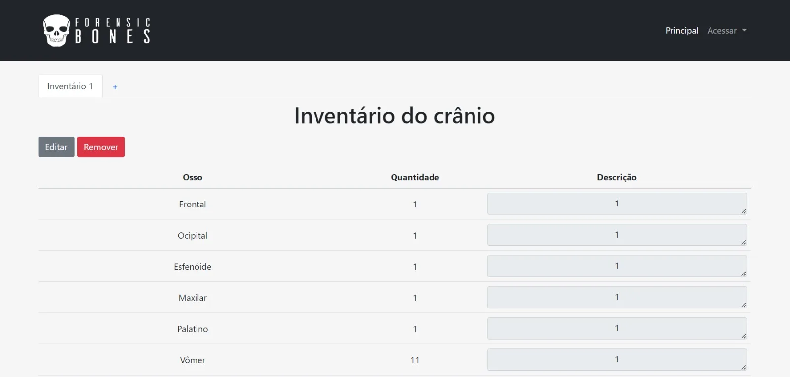
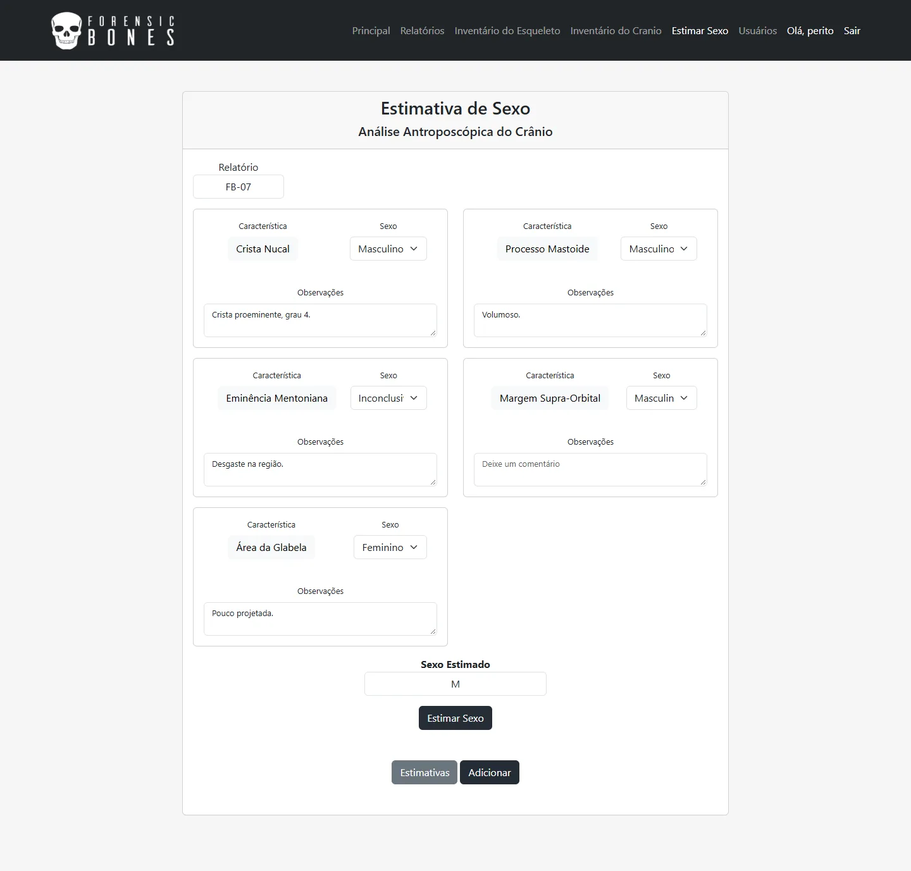
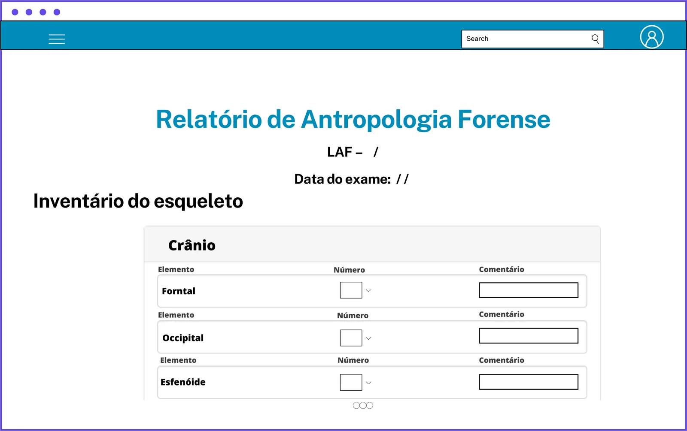

PortfólioSistemas e plataformas
Forensic Bones
Aplicação web para o laboratório de antropologia forense. O perito abre um relatório, faz o inventário dos ossos, registra fotos dos achados e estima o sexo a partir de 5 marcadores do crânio.
- Tipo
- Projeto acadêmico em grupo
- Ano
- 2023
- Usuários
- Peritos e administrador
- Hospedagem
- Azure App Service (desativada)
21ossos no inventário do crânio
5marcadores para estimar o sexo
11requisitos funcionais
8casos de teste
Telas






Fluxo do exame
Fluxo da documentação do projeto: primeiro o relatório, depois os registros ligados a ele.
Acesso
Logine-mail e senha
Cadastrona página inicial
Relatório
Novo relatóriocódigo, data, responsável
Buscar relatóriolista por data
Registros do relatório
Inventário do crânio21 ossos
Inventário do esqueletofotos e observações
Achados patológicosfotos
Estimativa de sexo5 marcadores
Consulta
Detalharrelatório e registros
Alterarqualquer registro
Excluircom confirmação
Estimativa de sexo
Cada marcador abre a figura de referência. Na tela de exemplo: 3 masculino, 1 feminino e 1 inconclusivo dão M.
1
Crista nucal
Masculino, feminino ou inconclusivo.
2
Processo mastoide
Idem, com observação livre.
3
Eminência mentoniana
Idem.
4
Margem supra-orbital
Idem.
5
Área da glabela
Idem.
=
Resultado
A resposta mais frequente. Empate entre masculino e feminino dá inconclusivo.
Funcionalidades
- PerfisAdministrador gerencia usuários; perito vê relatórios, inventários e estimativas.
- AcessoLogin por cookie e senha com bcrypt; páginas de exame exigem login.
- RelatóriosCriar, consultar, alterar e excluir, do mais recente para o mais antigo.
- InventáriosQuantidade e descrição por osso, com fotos do esqueleto e dos achados.
- DocumentaçãoContexto, requisitos, wireframes, diagramas, plano e registro de testes.
Modelo de dados
Tecnologias
C#.NET 8ASP.NET Core MVCEntity Framework CoreSQL ServerBootstrapBCryptDockerAzure